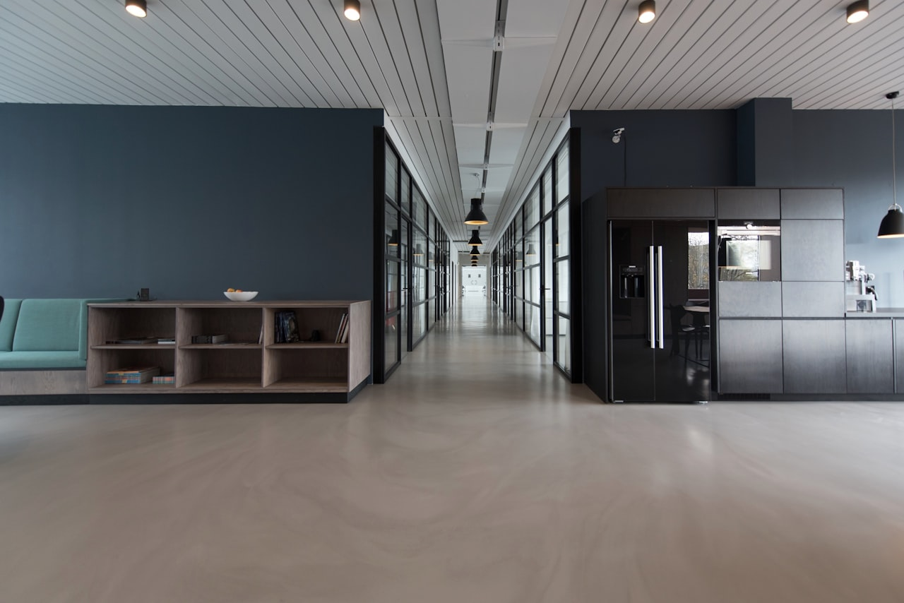

Commercial pest control requires a different approach than residential work. Waterbury Pest Control brings the Integrated Pest Management expertise and scheduled-service capacity that Waterbury businesses need to stay compliant and pest-free.
1,200+Properties Serviced
FastDispatch
UpfrontPricing
Business Pest Control
Business Property Pest Control Experts in Waterbury
Commercial pest control requires specialized expertise, scheduling flexibility, and an understanding of health-code and compliance needs. From restaurant kitchens and retail floors to offices and warehouses, Waterbury Pest Control has the Integrated Pest Management expertise to protect your property and minimize disruption to your business.
We understand that a pest problem on commercial property means lost business, failed inspections, and potential liability exposure. That's why we provide fast response, full service documentation, and code-compliant treatment for commercial accounts.
Restaurants and food service
Offices and retail stores
Warehouses and distribution centers
Hotels and hospitality
Property management and multi-family
Scheduled maintenance contracts

Need Commercial Pest Control?
Our commercial pest control team is ready to keep your property protected and compliant.
Comprehensive Food-Service Pest Management Programs
Restaurants and food-service businesses face unique pest challenges that demand discreet, reliable, code-compliant service. Loading docks, storage rooms, and prep areas give cockroaches, rodents, and flies countless ways to get in and establish themselves. Waterbury Pest Control specializes in food-service pest programs built on Integrated Pest Management, including thorough inspections, sanitation and exclusion recommendations, targeted treatment of cockroaches, rodents, ants, and flies, and discreet scheduled service that works around your hours.
Health-code compliance is a critical concern for any food-service operator. A single pest sighting can lead to failed inspections, fines, negative reviews, and even closure. Our programs identify vulnerabilities before they become violations, with documented inspections and service records that demonstrate due diligence to health inspectors and auditors. We provide detailed reports and service logs after each visit, along with the documentation many third-party food-safety audits require.
We work directly with owners, managers, and kitchen staff to develop prevention and treatment plans that protect your business and fit your operating schedule. Our technicians are trained to work discreetly in occupied facilities, treating during off-hours when needed, minimizing disruption, and keeping your kitchen running and inspection-ready.
Running a Restaurant?
Keep your kitchen protected and inspection-ready with a customized pest management plan from our expert team.
Retail stores, office buildings, and warehouses need discreet, reliable pest control to protect employees, inventory, and their reputation. Pests in a commercial setting can damage merchandise and inventory, drive away customers, and put employee health at risk. Rodents chew through stock and wiring, while cockroaches and ants contaminate break rooms and storage. Waterbury Pest Control provides comprehensive pest control for commercial business properties including thorough inspections, interior and exterior treatment, rodent exclusion, ongoing monitoring, and discreet service scheduled around your operating hours.
For property managers overseeing multiple commercial locations, we offer portfolio service contracts that provide consistent quality across all properties, consolidated billing, priority scheduling, and a single point of contact for all pest control needs. Our commercial account managers understand the importance of protecting your tenants and reputation, and they coordinate service to minimize any disruption to your business and customers.
Warehouse & Distribution
Warehouse and Distribution Center Pest Control
When pests take hold in a large facility — a warehouse, distribution center, or manufacturing plant — the scale of the space demands specialized expertise and a structured approach. Waterbury Pest Control handles large commercial pest control programs throughout Waterbury, deploying experienced technicians and Integrated Pest Management strategies to protect product, equipment, and entire buildings.
Our large-facility services include comprehensive facility inspections, monitoring devices and bait stations mapped across the property, rodent exclusion to seal entry points around docks and doors, targeted treatment for cockroaches, ants, and stored-product pests, detailed documentation and trend reporting for audits, and coordination with facility and safety managers. We understand that operations and supply timelines are critical, and we schedule service to protect your inventory without compromising productivity.
Looking for a Commercial Pest Control Partner?
Waterbury Pest Control offers tailored pest control programs for commercial properties of all sizes in Waterbury.
Commercial property owners have a duty of care to maintain safe, sanitary conditions for employees, customers, and tenants. Unaddressed pests can result in failed health inspections, regulatory fines, contaminated product, and costly liability claims. Waterbury Pest Control provides Integrated Pest Management programs that combine thorough inspections, monitoring, sanitation and exclusion guidance, and targeted, low-impact treatments that address pest pressure at the source. Our written reports identify risks, assign priority levels, and recommend specific preventive actions.
These programs serve a dual purpose: they protect people and property by eliminating pests, and they provide the documentation that demonstrates due diligence to health inspectors, auditors, and regulators. Inspectors and food-safety audits look favorably on businesses that maintain regular professional pest service and act on expert recommendations. We maintain detailed service logs, trend reports, and a compliance-ready documentation binder for every account, with more frequent service for high-risk areas such as kitchens, dumpsters, loading docks, and storage rooms.
Emergency Service
Commercial Emergency Pest Response in Waterbury
A pest emergency on a commercial property can shut down a kitchen, alarm customers and employees, contaminate product, and expose the owner to liability and compliance problems. Waterbury Pest Control provides fast, emergency pest service for commercial properties throughout Waterbury and surrounding areas. When you call our commercial line, we dispatch an experienced technician quickly and discreetly.
Our technicians are equipped to handle any commercial pest emergency including cockroach outbreaks, rodent activity, stinging insects, and stored-product pests. We prioritize identifying the source and treating the active problem as quickly as possible, then put exclusion and monitoring in place to keep it from returning. Every commercial response includes thorough documentation for your service records and compliance files.
Ongoing Protection
Proactive Pest Prevention for Businesses
The most cost-effective approach to commercial pest control is preventing infestations before they occur. Waterbury Pest Control offers customized scheduled maintenance programs for commercial properties of all types and sizes. Our programs include scheduled inspections, monitoring of high-risk areas, exclusion and sanitation assessments, treatment of active pests, and seasonal preparation for pest pressure throughout the year. Each program is tailored to the property's specific layout, occupancy patterns, and budget requirements.
Scheduled maintenance typically costs a fraction of dealing with a major infestation and significantly reduces the risk of failed inspections and emergency call-outs. Our commercial clients consistently report fewer pest sightings, smoother health inspections, and better overall property protection after implementing a program. Call us to discuss a plan designed for your property's needs and budget.
Dependable Business Pest Control
Protect your reputation. Stay compliant. Call Waterbury Pest Control for your commercial pest control needs.